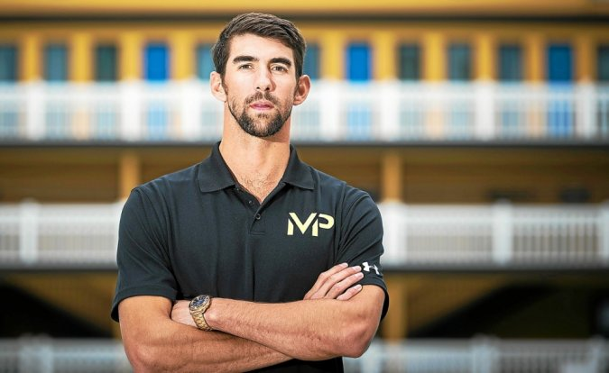
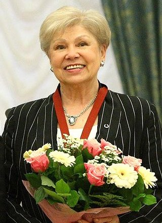

Les plus grand palmarès
- Le nageur américain Michael Phelps, avec ses 28 médailles au total en 4 olympiades, est le sportif ayant récolté le plus de médailles. Il détient aussi le record de médailles d'or obtenues lors de Jeux olympiques avec 23 titres.
- Larissa Semionovna Latynina ,Pendant exactement 48 ans, elle a été la sportive olympique la plus médaillée de l'histoire des Jeux, été et hiver compris, avec 18 médailles (9 d'or, 5 d'argent et 4 de bronze)
- Paavo Johannes Nurmi,Lors de sa carrière, il établit vingt-deux records du monde, du 1 500 m au 20 000 m, et remporte douze médailles lors des Jeux olympiques, dont neuf titres, devenant ainsi l'athlète le plus médaillé de ce sport

